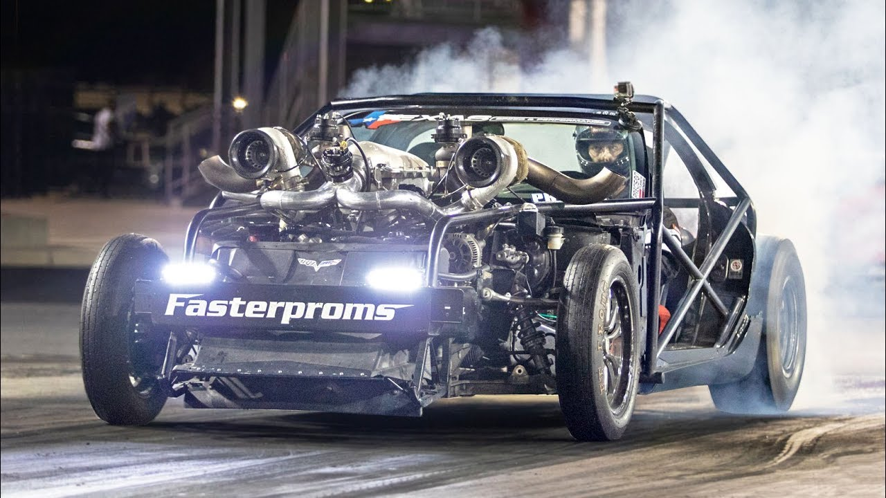

My Favourite Cars
September 29, 2022 by Kevin McBean
I love all types of cars. Drag cars, Drift cars, Circuit cars, Time Attack cars, Offroad cars, Street cars, Show cars or Antique cars, you name it. I got into liking cars from playing video games like Gran Turismo 3 and 4 with my uncle when I was younger. I was also brought to Dover Raceway when I was a young teen and completely fell in love with the feeling of being around such adrenaline-inducing machinery. I began watching YouTube videos of racing and how to make cars go faster and just admired the true beauty that some of these cars possess. My all-time favourite car happens to be this stick-shift C5 Corvette with no body-panels which was the first GM stick-shift vehicle to ever do a sub 7 second 1/4 mile run. It makes around 1500hp on the dyno and makes the craziest of sounds when its brought to the limit. It belongs to a YouTuber known as Cleetus McFarland who's videos I watch religiously. I got the opportunity to watch it race in person at FL2K in Bradenton, Florida.
Subarus are my favourite car brand. My uncles had Subarus growing up, one had a 1996 Subaru Impreza which he carried me to school in on many occassions and the other had a 2003 Subaru Forester which is still one of the fastest cars I've gotten to drive so far. I currently drive a stick-shift 1.5L Subaru Impreza which is a fun car to drive and get familiar with stickshift as it is slow enough to control at its limit while still being safe in most situations. The fastest car I've been in is not a Subaru however, but a 650whp Mitsubishi Evolution 8 that belongs to my cousin in Florida.